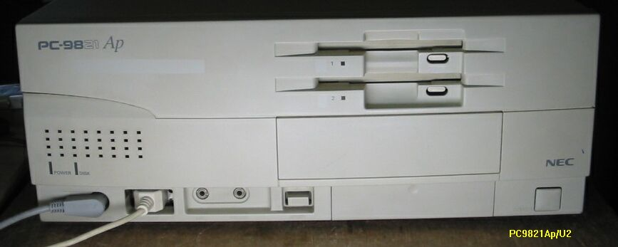
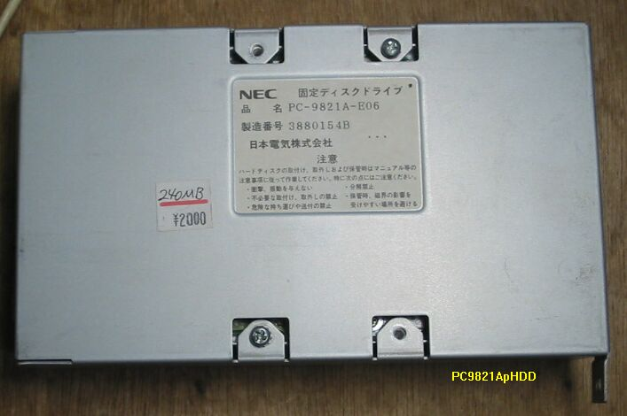
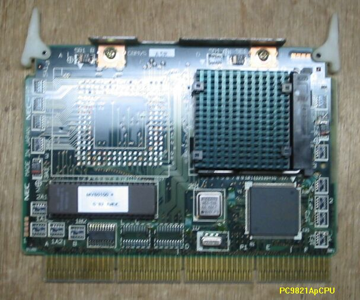
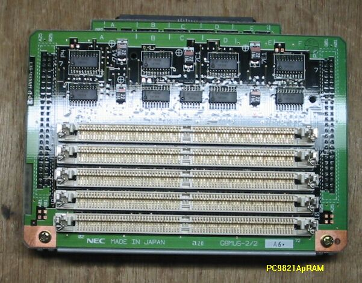
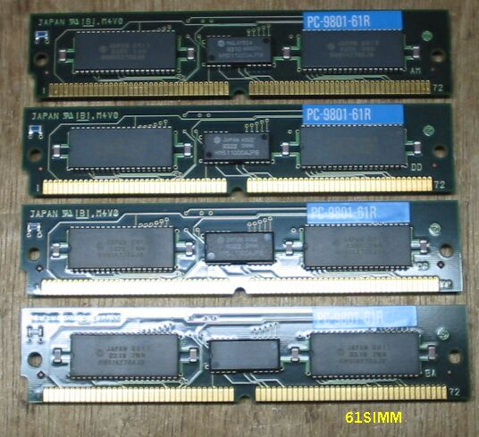

PC9821Ap

PC9821Apは、初代MATEシリーズの最上位機種で、486DX2-66MHzを搭載しています。これは 地元のジャンク屋で、完全に部品を抜き取られ、マザーボード、とケースだけの状態で発見した
ものです。CPUボードと電源は、別々に売られていたので、すぐに確保しました。全部で２千円位 です。とりあえず、最小の構成で、MS-DOSの動作が確認できました。ハードディスクがすぐには
見つからず、秋葉原の98が多いジャンク屋で、金属のケースに入ったAp用のHDを２千円で購入、 ついでに増設メモリがあるか聞いてみると、NEC製の新品箱入り4MB増設ボードが２千円というので
これも購入。さらに増設するには61互換のメモリが必要で、１枚2MBで２千円というので、買わずに 帰ってきました。ようやく、Windows3.1の、インストールできる環境ができたので、早速
インストール。拡張ボードなど何も付けていなかったので、簡単にインストールは出来ました。
PC9821ApのHDD

購入したときには、240MBのフルハイトのドライブが入っていた。その後、Quantumの540MBに変更。
PC9821ApのCPU

486DX2が付いています。MacのCPUのようにドーターカードです。
PC9821Apの増設RAMボード

増設RAMボード、PC-9821A-B01、このボード自体で4MBですがこの上に2MBの61SIMMを
５枚までさせます。しかしそうなると、ApのmaxRAM容量14.6MBを越えてしまいますね。
PC-9801-61R SIMM

これが、PC98-61 SIMMです。
PC9821のページに戻る